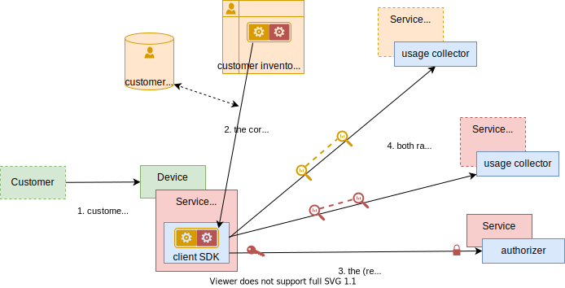
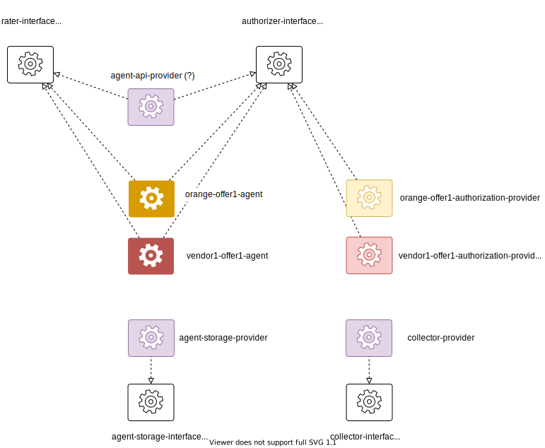

About the distributed-rating project
Mermaid test
graph TD;
A-->B;
A-->C;
B-->D;
C-->D;
Admonish test
Concepts
third party management
- definitions
- service vendor: customer-facing tier, manages the customer subscription, billing and payments
- service provider: provides a technical service, also acts as a service vendor in B2B2X scenarios
basic case: the service vendor is the service provider
-
key ideas
- usage rating is done client-side via a rating agent deployed inside the service client app
- a rating agent also acts as an authorization for consuming the service
- a rating agents is the implementation of a commercial offer subscibed by the customer, it is managed like a contract
-
communication diagram
complex case: service vendor and service provider
-
key ideas
- the service vendor subscribes to a service provider (exactly like an end-user customer)
- the users rating agent is a composite of service vendor and service provider rating agents
- the service provider's rating agent is used as the authorization for consuming the service
- end-user usage is uploaded to both service vendor and service provider
-
communication diagram: service subscription

-
communication diagram: service usage

and what about provisionning?
counting and rating
-
a rating agent is a program specific a service / a commercial offer / a payment mode
-
its implementation will depend on the use cases

post-paid
rating agent will
- authorize the customer to consume the service
- generate rated proofs of service usage that will be aggregated on the customer bill (maintained by the service vendor)
prepaid / bucket management
rating agent will
- manage a stateful service bucket and consume it according to customer usage
- report on the consuption of the service bucket
- authorize the customer to consume the service
- generates rated proofs of service usage, used for auditing / fraud detection
µ-payments
rating agent will
- trigger payment request and expect payment proof before allowing the usage of the service
- authorize the customer to consume the service
- generates rated proofs of service usage, used for auditing / fraud detection
agent mandatory traits
- authorizer trait:
authorize(identity) -> key - rater trait:
rate(usage) -> void
basic case
composite case

- note that there is "shortcut" in
3. get vendor identity. It does not really return an identity but a "vendor service subscription" authorization token. Check next paragraph
identity management
The IAM have been simplified in the previous diagrams.
We distinguish
- Client identity (OIDC profile, OAuth token)
- Client service subscription authorization token (OAuth token): traded from the client identity, represents the fact that the client has subscribed to the service, regardless its right to access the service (for instance with an empty bucket on a prepaid service)
And the same for Service Vendors (which are Clients of Service Providers)
The authorizer trait signature is authorize(service subscription authorization token) -> key
Software Architecture
Actors
flowchart LR
vod(VOD Application)
subgraph common [Common Sub-lattice]
authz(Client AuthZ Service)
coordinator(Rating Coordinator)
crypto(Crypto Provider)
facade("Customer Product <br> Inventory Facade")
gateway(API gateway)
httpd(HTTP server provider)
end
subgraph orange [Orange Sub-lattice]
orange_agent_http("HTTP client Provider <br> (fetch auth keys)")
orange_agent_kv("KV Provider <br> (agent, conf, buckets)")
orange_agent("Orange VOD <br> Rating Agent")
orange_collector_kv(KV/SQL Provider)
orange_collector("Usage Collector")
orange_inventory_kv(KV Provider)
orange_inventory("Orange Customer <br> Product Inventory")
end
subgraph partner_x [Partner X Sub-lattice]
partner_x_agent("Partner X VOD <br> Rating Agent")
partner_x_inventory("Partner X Customer <br> Product Inventory")
end
subgraph partner_y [Partner Y Sub-lattice]
partner_y_agent("Partner Y VOD <br> Rating Agent")
partner_y_inventory("Partner Y Customer <br> Product Inventory")
end
coordinator --> orange_agent
coordinator --> partner_x_agent
coordinator --> partner_y_agent
crypto -.-> authz
facade -->|Search|orange_inventory
facade -->|Search|partner_x_inventory
facade -->|Search|partner_y_inventory
gateway --> authz
gateway --> coordinator
gateway --> facade
gateway <-.- httpd
orange_agent --> orange_collector
orange_agent <-.- orange_agent_http
orange_agent <-.- orange_agent_kv
orange_collector_kv -.-> orange_collector
orange_inventory_kv -.-> orange_inventory
vod --> httpd
classDef domain fill:#fffff7,stroke-dasharray:10,stroke-width:2px,font-weight:bold
class common,orange,partner_x,partner_y domain
classDef offer fill:#d6e8d5
class vod,orange_agent,partner_x_agent,partner_y_agent offer
classDef provider fill:#ffe6cc
class crypto,httpd,orange_agent_http,orange_agent_kv,orange_collector_kv,orange_inventory_kv provider
classDef actor fill:#dae8fc
class authz,gateway,facade,coordinator,orange_collector,orange_inventory,partner_x_inventory,partner_y_inventory actor
| Legend | |
|---|---|
| ORANGE | Capability Providers |
| BLUE | Non offer-dependent Actors |
| GREEN | Offer-dependent Actors There is as many actor types as offers |
Functional Specification
TABLE OF CONTENT
Introduction
The aim of this page is to describe the business aspects for the distributed charging and rating process. The specification should try to describe when possible the similarities between the distributed rating and the charging and billing components in TMF.
Context
Distributed rating aims to explore the use of distributed architecture for the rating and part of the charging process to optimize the utilization of the various infrastructure components. For reference the software architecture for the stream can be found here.
Assumptions
Given the fact that this part is a research activity, this component will aim to comply with the TMF guidelines while allowing room for the needs of its innovative nature. in the first evolution the system may mock any external components to expedite the research activities.
The first evolution should focus on products provided over IP through a client application to facilitate the tracking of their usage through the client application.
Charging & Billing

The process called "Billing" consists of a set of different processes, each working on one type of data:
- Charging in charge of controlling the usage and decrementation of bundles. It is part of the "Factory" platform and uses the Charging rules and features described at the Product level.
- Rating which valuates the usage tickets sent by the Charging. It is part of the "Offer & Products" platform and uses the tariffs and tariff plans described in the Offers to determine the tariff codes (InstalledTariff) that will be used to make the invoice.
- Bill alculation, which calculates the billable items (AppliedTariff) that will be sent to billing to be put on the bill. It is part of the "Offer & Products" platform and uses the rates and tariff plan described in the Offers
- Invoicing which establishes the invoice from billable items received. It is part of the "Party" platform and uses commercial catalog information to calculate invoice elements and layout.
Part of the charging and rating will be distributed in the new architecture, the rating component should then feed the generated tariff to the billing component. There's no direct impact from the invoicing component so it will not be discussed in this document's scope.
Charging and Billing within eTOM
Below are listed level 2 business processes that are related to Product rating & Bill Calculation from within the eTOM business process framework, these processes should be used as a guide while distributing the operations on the new architecture.
Product Usage Management
The Product Usage management processes encompass the functions required to guide, distribute, mediate, summarize, accumulate, and analyze Product Usage records. These processes may occur in real-time, near real-time (i.e. just at the end of the usage), or may be executed on a periodic basis.
Conventionally the usage is collected on the network component and forwarded to be processed in the usage management component.
In the distributed rating, the Client SDK should do the usage collection and forward it to the Rating Agent to be processed in real-time.
Below is the data schema of the product usage management as defined in TMF-635, the main entity used in the usage management process is the Usage and UsageSpecification
%%{init: {'theme': 'base', 'themeVariables': {
'lineColor': '#a8201a',
'primaryColor': '#fae5c7',
'primaryBorderColor': '#0f8b8d'
}}}%%
classDiagram
direction LR
class RelatedParty{
URI href
String id
String name
String role
String @type
String @baseType
String @referredType
URI @schemaLocation
}
class UsageSpecificationRef{
URI href
String id
String name
String @type
String @baseType
String @referredType
URI @schemaLocation
}
class Usage{
URI href
String id
String usageType
Date usageDate
UsageStatusType status
String @type
String @baseType
URI @schemaLocation
}
class UsageStatusType{
<<Enumeration>>
received
rejected
recycled
guided
rated
rerated
}
class UsageCharacteristic{
String id
String name
String valueType
Any value
String @type
String @baseType
URI @schemaLocation
}
class CharacteristicRelationship{
URI href
String id
String relationshipType
String @type
String @baseType
URI @schemaLocation
}
RelatedParty "0..*" <--* Usage
UsageSpecificationRef "0..1" <--* Usage
Usage -- "1" UsageStatusType
Usage *--> "0..*" UsageCharacteristic
UsageCharacteristic *--> "0..*" CharacteristicRelationship
Product Rating & Rate Assignment
The purpose of Product Rating & Assignment is to rate a value (monetary or other) to Product Usage or a set of Product Usages and assign the result to a Product and a Billing Account. The charge may be either a credit or a debit and can be handled either online or offline.
Online charging is performed in real-time, necessitating an authorization component that can impact the delivery of the product and enables the operator to provide prepaid products to their customers. Conversely, offline charging takes place after the product has been delivered and does not necessitate real-time processing, and typically pertains to subscription-based products.
in the distributed rating, optimally the process of usage and rating should be done on the edge or the FOG levels to minimize the loud on the infrastructure.
Below is the data schema of the product usage management as defined in TMF-635, the main entity used in the product rating and rate assignment process is the RatedProductUsage entity
%%{init: {'theme': 'base', 'themeVariables': {
'lineColor': '#a8201a',
'primaryColor': '#fae5c7',
'primaryBorderColor': '#0f8b8d'
}}}%%
classDiagram
direction LR
class RelatedParty{
URI href
String id
String name
String role
String @type
String @baseType
String @referredType
URI @schemaLocation
}
class UsageSpecificationRef{
URI href
String id
String name
String @type
String @baseType
String @referredType
URI @schemaLocation
}
class Usage{
URI href
String id
String usageType
Date usageDate
UsageStatusType status
String @type
String @baseType
URI @schemaLocation
}
class UsageCharacteristic{
String id
String name
String valueType
Any value
String @type
String @baseType
URI @schemaLocation
}
class CharacteristicRelationship{
URI href
String id
String relationshipType
String @type
String @baseType
URI @schemaLocation
}
class UsageStatusType{
<<Enumeration>>
received
rejected
recycled
guided
rated
rerated
}
class RatedProductUsage{
Money bucketValueConvertedInAmount
bool isBilled
bool isTaxExempted
String offerTariffType
String ratingAmountType
Date ratingDate
Money taxExcludedRatingAmount
Money taxIncludedRatingAmount
float taxRate
String usageRatingTag
String @type
String @baseType
URI @schemaLocation
}
class ProductRef{
URI href
String id
String name
String @type
String @baseType
String @referredType
URI @schemaLocation
}
RelatedParty "0..*" <--* Usage
UsageSpecificationRef "0..1" <--* Usage
Usage -- "1" UsageStatusType
Usage *--> "0..*" UsageCharacteristic
Usage *--> "0..*" RatedProductUsage
UsageCharacteristic *--> "0..*" CharacteristicRelationship
RatedProductUsage *--> "0..1" ProductRef
Product Balance Management
This process is responsible for holding, calculating, applying policies and managing functionality/interfaces for the Product balances, Here the values resulting from rating and the application of discounts are applied to a Product balance. The balance affected by the value may be monetary or other balances such as minutes, points, or tokens.
The Rating Agent should ensure that the balance is impacted and reduce it to match the product usage. The aim is to ensure that the balance is impacted instantly and is managed in a distributed manner. The operations for balance management (like top-up operations) will be out of scope of the first evolution and only the reduction of balance based on usage will be represented.
Below is the data schema of the balance as defined in TMF-654
%%{init: {'theme': 'base', 'themeVariables': {
'lineColor': '#a8201a',
'primaryColor': '#fae5c7',
'primaryBorderColor': '#0f8b8d'
}}}%%
classDiagram
direction LR
class PartyAccountRef{
String id
String href
String name
}
class RelatedPartyRef{
String id
String href
String role
String name
}
class BucketBalance{
[ SID CustomerAccountBalance ]
String id
String href
String name
String discription
String bucketType
TimePeriod validFor
Quantity remainedAmount
Quantity reservedAmount
String status
}
class RealizingResourceRef{
String id
String href
String name
String @type
String value
}
class ProductRef{
String id
String href
String name
}
PartyAccountRef "1" --o "1" BucketBalance
RelatedPartyRef "0..*" --o "1" BucketBalance
BucketBalance "1" o-- "0..*" RealizingResourceRef
BucketBalance "1" o-- "0..*" ProductRef
RealizingResourceRef "*" -- "1" ProductRef
Bill Calculation
Customer Bill Invoice Management processes ensure the bill invoice is created, physically and/or electronically produced and distributed to customers, and that the appropriate taxes, discounts, adjustments, rebates and credits for the products delivered to customers have been applied. These processes are accountable for assuring that enterprise revenue is billed and invoices delivered appropriately to customers.
These processes are responsible for, but not limited to:
- Establishment and application of taxes and charges to the products delivered to customers;
- Application of the adjustment (adjustment decision done in Customer Bill Inquiry Handling);
- Creation of accurate Customer bill invoices including all adjustments, rebates, discounts, credits, etc.
- Production & distribution of Customer bill in physical and/or electronic form to customers in accordance with the billing cycle;
- Forecasting of physical resources associated with Customer bill production, such as paper and envelope quantities;
- Alignment and management of promotional material insertion into distributed Customer bills
- Establishment and management of third party arrangements to support Customer bill invoice generation, production and distribution.
The implementation of the Bill Calculation component is out of scope of the distributed rating however the system should ensure that it can generate Proof of Usages and rated events that can be forwarded to the Bill calculation component - through events or shared storage - to support post paid business scenarios. The support for aggregated rating will not be addressed in the first release and can be included in later evolution due to the technical complexity associated with it.
Managed entities
Customer Product Inventory
The customer product inventory component holds the information about the customer and his installed products. it's used to track all the products that the customer has subscribed to as well as their cost. in the first release the customer inventory will be a simple key-value store that holds the customer id as the key and party information with a list of their installed product in the value. the figure below show the schema of the data stored in the value.
%%{init: {'theme': 'base', 'themeVariables': {
'lineColor': '#a8201a',
'primaryColor': '#fae5c7',
'primaryBorderColor': '#0f8b8d'
}}}%%
classDiagram
direction LR
class Party {
string id
string name
}
class CustomerInventory {
Party relatedParty
List~Product~ products
}
class ProductOfferingRef {
string id
string name
string agentId
Quantity unitOfMeasure
}
class Quantity {
string amount
string units
}
class Product {
string id
string partnerId
string description
ProductOfferingRef productOffering
ProductPrice productPrice
}
class ProductPrice {
PriceType priceType
DataTime validTill
string description
Quantity unitOfMeasure
Price price
}
class PriceType {
<<Enumeration>>
recurring
none-recurring
penalty
one-time
}
class Price {
string unit
float value
}
Party --o CustomerInventory
CustomerInventory *-- Product
ProductOfferingRef --o Product
ProductOfferingRef *-- Quantity
Product o-- ProductPrice
Quantity --* ProductPrice
ProductPrice o-- PriceType
ProductPrice *-- Price
productPrice: An amount, usually of money, that represents the actual price paid by a Customer for a purchase, a rent or a lease of a Product. The price is valid for a defined period of time. price: A money (Money). The amount of money that characterizes the price.
Money sub-resource A base / value business entity used to represent money. unit: A string. Currency (ISO4217 norm uses 3 letters to define the currency). value: A float. A positive floating point number.
Customer product inventory field descriptions
RelatedParty sub-resource: Related Entity reference. A related party defines party or party role linked to a specific entity.
- name: A string. Name of the related entity.
- id: A string. unique identifier.
productOffering A product offering reference (ProductOfferingRef). A product offering represents entities that are orderable from the provider of the catalog.
- name: A string. Name of the related entity.
- id: A string. unique identifier.
- agentId: the identifier for the agent in charge of rating this offer
productPrice: An amount, usually of money, that represents the actual price paid by a Customer for a purchase, a rent or a lease of a Product. The price is valid for a defined period of time.
- price: A money (Money). The amount of money that characterizes the price.
- priceType: A string. A category that describes the price charge, such as recurring, penalty, One time fee and so forth.
- unitOfMeasure A quantity (Quantity). A number and unit representing how many (for instance 1 dozen) of an ProductOffering is available at the offered price. Its meaning depends on the priceType. It could be a price, a rate, or a discount.
Money sub-resource: A base / value business entity used to represent money.
- unit: A string. Currency (ISO4217 norm uses 3 letters to define the currency).
- value: A float. A positive floating point number.
Rated Usage Inventory
The rated usage inventory component holds the information about the customer's usage and its associated cost. it's used to hold the rated usage information that can be forwarded later on to the billing component. the figure below show the schema of the rated usage.
%%{init: {'theme': 'base', 'themeVariables': {
'lineColor': '#a8201a',
'primaryColor': '#fae5c7',
'primaryBorderColor': '#0f8b8d'
}}}%%
classDiagram
direction TB
class Party {
string id
string name
string role
string @referredType
}
class RatedUsage {
string id
string usageDate
string description
string usageType
string status
Party relatedParty
RatedProductUsage ratedProductUsage
List~UsageCharacteristic~ usageCharacteristics
}
class UsageCharacteristic {
string id
string name
string valueType
string value
}
class RatedProductUsage {
bool isBilled
string ratingAmountType
string ratingDate
BucketValueConvertedInAmount bucketValueConvertedInAmount
ProductRef productRef
}
class BucketValueConvertedInAmount {
string unit
int value
}
class ProductRef {
string id
string name
}
Party --o RatedUsage
UsageCharacteristic --* RatedUsage
RatedUsage *-- RatedProductUsage
RatedProductUsage o-- ProductRef
RatedProductUsage o-- BucketValueConvertedInAmount
Rated usage inventory field descriptions
RatedUsage fields:
- id: A string. unique identifier.
- usageDate: A date time (DateTime). Date of usage.
- description: A string. Description of usage.
- ratedProductUsage: rated product usages (RatedProductUsage). An occurrence of employing a product for its intended purpose with all rating details.
- relatedParty: related party (RelatedParty ). Related Entity reference. A related party defines party or party role linked to a specific entity.
- status: A usage status type (UsageStatusType). Possible values for the status of the Usage.
- usageCharacteristic: A list of usage characteristics (UsageCharacteristic [*]). Provides the value of a given characteristic.
- usageType: A string. Type of usage.
Money sub-resource: A base / value business entity used to represent money.
- unit: A string. Currency (ISO4217 norm uses 3 letters to define the currency).
- value: A float. A positive floating point number.
RatedProductUsage sub-resource: An occurrence of employing a product for its intended purpose with all rating details.
- bucketValueConvertedInAmount: A money (Money). A base / value business entity used to represent money.
- isBilled: A boolean. Boolean indicating if usage have been billed or not.
- productRef: A product reference (ProductRef).
- ratingAmountType: A string. Type of amount.
- ratingDate: A date time (DateTime). Date of usage rating.
- usageRatingTag A string. Tag value: [usage]: the usage is always rated outside a usage bundle [included usage]: the usage is rated inside a usage bundle, [non included usage]: the usage bundle is exhausted. The usage is rated outside the usage bundle.
RelatedParty sub-resource: Related Entity reference. A related party defines party or party role linked to a specific entity.
- name A string. Name of the related entity.
- id A string. unique identifier.
- role A string. Role played by the related party.
UsageCharacteristic sub-resource: Provides the value of a given characteristic.
- id: A string. Unique identifier of the characteristic.
- name: A string. Name of the characteristic.
- valueType: A string. Data type of the value of the characteristic.
System Personas
Customer
The end user that is benefiting from the product irrespective of his relation with different entities involved.
- Person requesting to watch a movie on a streaming provider through his teleco account.
- Person requesting to use a hosting products from a cloud provider which relies on a teleco products for connectivity
Vendor
The entity that's managing the customer account. a vendor can be reselling a product, building a composite product or providing his own products as well.
Depending on the usecase the same entity can be regarded as vendor, provider or a partner.
Provider
The entity providing their products for partners with a revenue sharing model. providers can also be represented as the Vendor in case of selling directly yo the Customer.
Partner
Describes the relation between Vendors and providers, providers are considered a partner for the vendor that's reselling/composing their products. Providers are also considered partners to other providers if the use other products.
Retrival of customer product inventory
As a customer of a Teleco provider
I want to list products available to me
so that I can use some of them
As a vendor providing products over IP through a Teleco provider
I want to have integration with the Teleco provider product inventory
so that I can list the products I provide
and make the products available for usage
Business processes
Process model for the retrival of customer product inventory

Legend
| Term | description |
|---|---|
| Party | A customer that has subscribed to a product |
| Vendor/Partner | An entity that sells products provided by another entity through a partnership agreement |
| Client SDK | The application from which the product are used |
| Product Offer | A product offering represents entities that are orderable from the provider of the catalog |
| Product | An instantiated offer for a specific party |
| Rating agent | The contract for the rating |
| Actor | An instantiated Rating Agent |
| Rating coordinator | A component responsible for orchestrating the rating requests to different Rating Agents |
Overview of product usage rating
As a Vendor providing products over IP through a Teleco provider
I want to build new products based on products offered by other vendors
and integrate with the rating platform of the Teleco provider
so that I can rate the usage of products I provide
and relay the rating to product dependencies vendors
As a Teleco Provider
I want to provide products from multiple partners
and relay the rating to partner's agent
so that I can ensure all partners have rated the product before usage
Product composition
For a composed product that depend on existing products, the rating platform needs to build product dependency model, and map it to corresponding agents for product usage rating, allowing each individual product vendor to rate its products
As shown in the following diagram a Streaming product can use Network, Storage, and Telemetry products to compose its functionality, in turn each of its product dependencies may have other dependencies.
%%{init: {'theme': 'base', 'themeVariables': {
'lineColor': '#a8201a',
'primaryColor': '#fae5c7',
'primaryBorderColor': '#0f8b8d'
}}}%%
flowchart LR
streaming(Streaming product)
storage(Storage product)
network(Network product)
telemetry(Telemetry product)
streaming --> storage
streaming --> network
streaming --> telemetry
telemetry --> storage
telemetry --> network
storage --> network
storage --> telemetry
classDef domain fill:#fffff7
class streaming domain
classDef offer fill:#d6e8d5
class storage offer
classDef provider fill:#ffe6cc
class network provider
classDef actor fill:#dae8fc
class telemetry actor
Business processes
Product usage overview
The process of product usage in the distributed rating system, which is illustrated in the model below, begins with the client request going through the Rating Coordinator and each Rating Agent before finally issuing the Usage Proof, which is collected and stored by the Usage Collector, focusing on the crucial role of the Rating Coordinator in decoupling the Rating Agent and standardizing the communication between them.
Also, the process model illustrates the iterative approach used by the Usage Collector to carry out its main three tasks:
- Construct the agent dependency graph, by recursively quering each agent for its dependencies.
- Validate the usage request by all the agents.
- Trigger rating for each agent in order of their dependencies.

Legend
| Term | description |
|---|---|
| Party | A customer that has subscribed to a product |
| Vendor/Partner | An entity that sells products provided by another entity through a partnership agreement |
| Client SDK | The application from which the product are used |
| Product Offer | A product offering represents entities that are orderable from the provider of the catalog |
| Product | An instantiated offer for a specific party |
| Rating agent | The contract for the rating |
| Actor | An instantiated Rating Agent |
| Rating coordinator | A component responsible for orchestrating the rating requests to different Rating Agents |
Rating of regular product
As a customer of a Teleco provider with postpaid account
I want to select some regular product from the Teleco provider mobile app
so that the cost will be reflected in my bill
As a vendor providing products over IP through a Teleco provider
I want to have integration with the Teleco provider rating process
so that I can monitor the usage of the products I provide
and track revenue of the products based on usage
As a Teleco Provider I want to rate the usage of movie streaming products so that I can charge the customer for his usage.
Business processes
Product usage overview
The process of product usage in the distributed rating system, which is illustrated in the model below, begins with the client request going through the Rating Coordinator and each Rating Agent before finally issuing the Usage Proof, which is collected and stored by the Usage Collector, focusing on the crucial role of the Rating Coordinator in decoupling the Rating Agent and standardizing the communication between them.
Also, the process model illustrates the iterative approach used by the Usage Collector to carry out its main three tasks:
- Construct the agent dependency graph, by recursively quering each agent for its dependencies.
- Validate the usage request by all the agents.
- Trigger rating for each agent in order of their dependencies.

Regular product rating

Legend
| Term | description |
|---|---|
| Party | A customer that has subscribed to a product |
| Vendor/Partner | An entity that sells products provided by another entity through a partnership agreement |
| Client SDK | The application from which the product are used |
| Product Offer | A product offering represents entities that are orderable from the provider of the catalog |
| Product | An instantiated offer for a specific party |
| Rating agent | The contract for the rating |
| Actor | An instantiated Rating Agent |
| Rating coordinator | A component responsible for orchestrating the rating requests to different Rating Agents |
Rating of threshold product
As a customer of a Teleco provider with postpaid account
I want to select some product with threshold product offer
so that I can use it from a providers mobile app
and the cost will be reflected in my bill
As a Teleco provider with threshold product offer
I want to calculate rated usage for it in a distributed manner
so that I can be reflected in the customers bill
Business processes
Product usage overview
The process of product usage in the distributed rating system, which is illustrated in the model below, begins with the client request going through the Rating Coordinator and each Rating Agent before finally issuing the Usage Proof, which is collected and stored by the Usage Collector, focusing on the crucial role of the Rating Coordinator in decoupling the Rating Agent and standardizing the communication between them.
Also, the process model illustrates the iterative approach used by the Usage Collector to carry out its main three tasks:
- Construct the agent dependency graph, by recursively quering each agent for its dependencies.
- Validate the usage request by all the agents.
- Trigger rating for each agent in order of their dependencies.

Threshold product rating

Legend
| Term | description |
|---|---|
| Party | A customer that has subscribed to a product |
| Vendor/Partner | An entity that sells products provided by another entity through a partnership agreement |
| Client SDK | The application from which the product are used |
| Product Offer | A product offering represents entities that are orderable from the provider of the catalog |
| Product | An instantiated offer for a specific party |
| Rating agent | The contract for the rating |
| Actor | An instantiated Rating Agent |
| Rating coordinator | A component responsible for orchestrating the rating requests to different Rating Agents |
Rating of bundle product offer
As a postpaid customer of a teleco provider
I want to select a bundled product of 3 movies for 1 dollar
so that I can use this product from a providers mobile app
and the cost of this product will be reflected in my bill
As a Teleco Provider
I want to sell a bundled product like 3 movies for 1 dollar in a distributed mode
so that I will deduct the correct cost from the customer bundle
Business processes
Product usage overview
The process of product usage in the distributed rating system, which is illustrated in the model below, begins with the client request going through the Rating Coordinator and each Rating Agent before finally issuing the Usage Proof, which is collected and stored by the Usage Collector, focusing on the crucial role of the Rating Coordinator in decoupling the Rating Agent and standardizing the communication between them.
Also, the process model illustrates the iterative approach used by the Usage Collector to carry out its main three tasks:
- Construct the agent dependency graph, by recursively quering each agent for its dependencies.
- Validate the usage request by all the agents.
- Trigger rating for each agent in order of their dependencies.

Bundle product rating

Legend
| Term | description |
|---|---|
| Party | A customer that has subscribed to a product |
| Vendor/Partner | An entity that sells products provided by another entity through a partnership agreement |
| Client SDK | The application from which the product are used |
| Product Offer | A product offering represents entities that are orderable from the provider of the catalog |
| Product | An instantiated offer for a specific party |
| Rating agent | The contract for the rating |
| Actor | An instantiated Rating Agent |
| Rating coordinator | A component responsible for orchestrating the rating requests to different Rating Agents |
Monorepo code organization
- Status: proposed
- Deciders:
- Date: YYYY.MM.DD
Technical Story: N/A
Context and Problem Statement
Code organization in the distributed-agent prototype
Decision Drivers
Simplicity, agility
Considered Options
-
one unique repo for interfaces, agents and other artifacts
-
one repo for each artifact
Decision Outcome
- one unique repo for interfaces and agents
Positive Consequences
- simple and agile, suited for a prototype
Negative Consequences
- only one lifecycle (~release) for all artifacts
We will want to reassess this decision in the target implementation
Kickstart
This document to give you kick to start your journey in Wasmcloud world.
Table of contents
Introduction
This document will take you step by step in your journey in Wasmcloud technology , starting from important links you must check passing by installation & running until testing your 1st actor :tada:
Important links
Installation
Cosmonic
Wash
Use cosmonic constellations
Smithy Notes
This document to give you some notes about smithy with wasmcloud and Rust.
Table of contents
Introduction
Every capability provider has a capability contract - an interface definition - that defines a service and a set of operations it supports. Even actor-to-actor messages, which don't use capability contracts, benefit by well-defined API contracts. In wasmCloud, we define these API contracts in Smithy files.
Important links
Annotation traits
codegen
when can we use this traits will be mentioned in this link but the only note you need to know is :
- you should add the import for codegenrust in your smithy file to see the effect of using this trait
use org.wasmcloud.model#codegenRust
Runbook : Manage ks store
Product name :
- distributed-rating
Product version :
- All
Runbook Goals :
- How to manage kv store using cli
Preconditions
- Cosmonic cli installed
- wash installed
- NATS cli installed
Stages :
- Stage 1 : List kv buckets
- Stage 2 : List all keys in a bucket
- Stage 3 : Put key and value
- Stage 4 : Get value using key
Stage 1 : List kv buckets
open your terminal and execute the below command
nats kv -s connect.cosmonic.sh --creds ~/.cosmo/user.creds ls
This command will retun the buckets in kv store
Stage 2 : List all keys in a bucket
open your terminal and execute the below command
nats kv -s connect.cosmonic.sh --creds ~/.cosmo/user.creds ls bucket-id
bucket-id : is the id of bucket returned from Stage 1
Stage 3 : put key and value
open your terminal and execute the below command
nats kv -s connect.cosmonic.sh --creds ~/.cosmo/user.creds put 125b2a01-09a1-4d64-8bfc-5aa222e9c560 key value
ex nats kv -s connect.cosmonic.sh --creds ~/.cosmo/user.creds put 125b2a01-09a1-4d64-8bfc-5aa222e9c560 customer1 '{\n "product": {\n "id":1234,\n "offerId":534,\n "description":"”Video on Demand”",\n "productPrice": {\n "description":"”Cost per movie”",\n "validTill":"1/March/2024",\n "priceType":"non-recurring",\n "unitOfMeasure": {\n "amount":"1",\n "units":"”movie”"\n },\n "price": {\n "unit":"eur",\n "value":"1"\n },\n "ratingAgent": {}\n }\n }\n }'
Stage 4 : Get value using key
open your terminal and execute the below command
nats kv -s connect.cosmonic.sh --creds ~/.cosmo/user.creds get bucket-id key --raw
Runbook : Link management
Product name :
- distributed-rating
Product version :
- All
Runbook Goals :
- How to manage links throw wash cli
Preconditions
- Cosmonic cli installed
- wash installed
Stages :
Stage 1 : Query Links
open your terminal and execute the below command
wash ctl link query -x 125b2a01-09a1-4d64-8bfc-5aa222e9c560 --ctl-port 4222 --ctl-host connect.cosmonic.sh --ctl-credsfile ~/.cosmo/user.creds
This command will retun the id of the Links
Stage 2 : Delete Link
open your terminal and execute the below command
wash ctl link del <link_id> wasmcloud:keyvalue -x 125b2a01-09a1-4d64-8bfc-5aa222e9c560 --ctl-port 4222 --ctl-host connect.cosmonic.sh --ctl-credsfile ~/.cosmo/user.creds
link_id : is the id returned from Stage 1
Stage 3 : Create Link
open your terminal and execute the below command
wash ctl link put --link-name <LINK_NAME> [OPTIONS]
LINK_NAME : the name of the link you need to create actor-id : the id of the actor which will use this link provider-id : the id of the provider which the actor will link to contract-id : the contract id of this provider
ex : wash ctl link put -x 125b2a01-09a1-4d64-8bfc-5aa222e9c560 --ctl-port 4222 --ctl-host connect.cosmonic.sh --ctl-credsfile ~/.cosmo/user.creds --link-name local-redis-to-vod-bucket MCS4KQH3XXYN2CA7TIY4OAWE4Q3J6AZSPWX6BK5EOF7MH2FE76NSGYIF VAKKKUUZH6FWYPS3T6WVAESSPVQMQYJ2IRCXGSHYCOISSIUGCXVJYC6M linkwasmcloud:keyvalue
Runbook : Shutdown a host
Product name :
- distributed-rating
Product version :
- All
Runbook Goals :
- Shudown a host in a local machine
Preconditions
- Cosmonic cli installed
- wash installed
Stages :
- Stage 1 : Get yout local host id
- Stage 2 : Stop the host
Stage 1 : Get your local host id
open your terminal and execute the below command
wash ctl get hosts -x 125b2a01-09a1-4d64-8bfc-5aa222e9c560 --ctl-port 4222 --ctl-host connect.cosmonic.sh --ctl-credsfile ~/.cosmo/user.creds
This command will retun the id of the running hosts

Stage 2 : Stop the host
open your terminal and execute the below command
wash ctl stop host <host_id> -x 125b2a01-09a1-4d64-8bfc-5aa222e9c560 --ctl-port 4222 --ctl-host connect.cosmonic.sh --ctl-credsfile ~/.cosmo/user.creds
host_id : is the id returned from Stage 1
Rationale
Context
IPCEI CIS WP2
- Cloud Infrastructure and Services
- Work Package #2
- Orange submission: open-source and distributed Core Commerce for IT
Value proposition
-
In a complex service ecosystem and/or 5G context, the rating of service usage is highly complex:
- service providers are no longer those who are in direct contact with the customer or those who invoice the customer, there are aggregators, marketplaces...
- the pricing rules for the usage of technical services may be different depending on the reseller (composite services, service bundles, discounts on purchase, on usage)
- even more: "à la carte" pricing for each customer
-
Rather than uploading raw usage data (~CDR), rated in a centralized rating engine system (or semi-distributed between the various partners who contribute to the final service provided to the customer), we propose to ditribute the rating process to the customer device and upload to the service vendor of usage tickets already valued
- each of the partners contributes to the specific pricing of the customer, the pricing is made directly at the same time as the consumption of the service
- to do a parallel with rights management: it is easier to have components that each carry their authorization model rather than applying the model externally to the entire system
- each partner brings (in the form of an agent) the valuation engine of his service, possibly configured / overloaded by a partner reusing this service
- "as code" rating engine approach rather than a fixed and parameterized system
-
Prerequisites for this scenario are: "reasonably secure" device environment, possibility of deploying code on this environment, ability to detect fraud
-
Orange offers an SDK to its partners allowing them to simply integrate the enhancement of the service into the application used to consume the service
- the SDK is a wasmcloud-js runtime that can run code (1 or wasmcloud agents) in charge of recovery
- the service consumer application feeds the SDK with usage data
Requirements
Main problematics
-
build a model that can support all scenarios of an open service ecosystem (B2B2X)
- vendors, aggregators, marketplaces, dynamic, as-a-service, recharging...
-
establish a shared trust between the 3 main actors (Service Provider, Vendor and Consumer)
- being able to distribute (crypto) proofs of usage, of subscription...
- "good enought" security model, especially on the users devices
-
fraud detection mecanism
Requirements
-
the solution
- cannot rely on DPI to identify trafic usage (cf. HTTP2/3/QUIC)
- is over-IP
- implement (or is frendly to) fraud detection mecanisms and is auditable
- does not require prior human agreement between the service vendor and the service provider (self-service)
-
optionnally, the solution should
- be compatible with a non reliable network (intermitent conncectivity, off-line mode)
Use cases
Some base examples, they could be combined
- customers sharing the same bucket for a given service (eg. Friends and Family offers)
- vendors reselling bundles of services with a different tarification (eg. 30% on Netflix + OCS bundle)
- composite offer (eg. free dataplan for watching VOD service)
- context dependant offers (eg. free videoconference while being at a special event)
- sponsored services (eg. third party offering 20% coupons on VOD for two months)
- each customer gets its personalized offer
Model
Domain exploration
- 3 main actors
- Service Consumer
- Service Vendor
- Service Provider

-
concepts
- rating engine
- proofs
- subscription
- usage
- identity
-
offers
- on usage
- pre-paid
- can an monthly subscription be seen as pre-paid?
-
payments
- 3 types
- µ-transaction: no billing, 1 usage = 1 immediate payment
- post-paid: 1 usage = 1 future payment on a bill
- pre-paid: w/ bucket, 1 usage = 1 bucket update
- in a 3-party interaction (user, vendor, provider)
- either the provider has to trust the vendor to "recover user's paiments"
- needs pre-agreement or a base of trusted vendors) DONT: incompatible w/ requirements
- either the vendor is paying the provider immediatly for the user's usage
- either the vendor has already bought a "pre-paid bucket" to the provider
- either the provider has to trust the vendor to "recover user's paiments"
- 3 types
-
B2B2C scenarios, bucket delegation
- the vendor buys pre-paid bucket to the provider
- it can split it among it's users
- user is paying the usage directly to the provider
- or decide to have an other payment type (µ-payment, billing)
- vendor is paying the usage to the provider
- it can split it among it's users
- the vendor buys pre-paid bucket to the provider
findings
- billing is a vendors responsibility, not a provider one
- it might be simplier (ie. support more scenarios) to always have a user>vendor>provider chain instead of a direct user>provider relation
to be discussed
-
entities modeling
- are Service Vendors also service providers?
- are service Vendors also service consumers?
- implementation note: instead of inheritance we can use traits
-
where shoud the usage proof go ?
- service vendor / provider / both
- avoid proxies
-
similar / alternative approaches
- Distributed IoT Online Rating – The Global Rating Grid @mavoco.com
- are there research papers on the subject?
- Shine (Orange internal project) third party use-cases
Solution 1
proposed solution (WIP)
third party management
- definitions
- service vendor: customer-facing tier, manages the customer subscription, billing and payments
- service provider: provides a technical service, also acts as a service vendor in B2B2X scenarios
basic case: the service vendor is the service provider
-
key ideas
- usage rating is done client-side via a rating agent deployed inside the service client app
- a rating agent also acts as an authorization for consuming the service
- a rating agents is the implementation of a commercial offer subscibed by the customer, it is managed like a contract
-
communication diagram

complex case: service vendor and service provider
-
key ideas
- the service vendor subscribes to a service provider (exactly like an end-user customer)
- the users rating agent is a composite of service vendor and service provider rating agents
- the service provider's rating agent is used as the authorization for consuming the service
- end-user usage is uploaded to both service vendor and service provider
-
communication diagram: service subscription

-
communication diagram: service usage

and what about provisionning?
counting and rating
-
a rating agent is a program specific a service / a commercial offer / a payment mode
-
its implementation will depend on the use cases

post-paid
rating agent will
- authorize the customer to consume the service
- generate rated proofs of service usage that will be aggregated on the customer bill (maintained by the service vendor)
prepaid / bucket management
rating agent will
- manage a stateful service bucket and consume it according to customer usage
- report on the consuption of the service bucket
- authorize the customer to consume the service
- generates rated proofs of service usage, used for auditing / fraud detection
µ-payments
rating agent will
- trigger payment request and expect payment proof before allowing the usage of the service
- authorize the customer to consume the service
- generates rated proofs of service usage, used for auditing / fraud detection
agent mandatory traits
- authorizer trait:
authorize(identity) -> key - rater trait:
rate(usage) -> void
basic case

composite case

- note that there is "shortcut" in
3. get vendor identity. It does not really return an identity but a "vendor service subscription" authorization token. Check next paragraph
identity management
The IAM have been simplified in the previous diagrams.
We distinguish
- Client identity (OIDC profile, OAuth token)
- Client service subscription authorization token (OAuth token): traded from the client identity, represents the fact that the client has subscribed to the service, regardless its right to access the service (for instance with an empty bucket on a prepaid service)
And the same for Service Vendors (which are Clients of Service Providers)
The authorizer trait signature is authorize(service subscription authorization token) -> key
About wasmCloud

Pros & Cons
wasmCloud pro & cons of in the context of this prototype
-
pros
- robust and ubiquous connectivity, network mesh over IP (inherited from NATS)
- zero-trust by design (as long as the runtime is secure): signed nodes, payloads & communications
- efficient
- event driven model, scalable, multi-region friendly
- clean split between pure functions (ie. wasmCloud Actors) and internal states / outside world (ie. wasmCloud CapabilityProviders)
- node runtime support many different hosts (vm, docker, k8s, browsers...)
- polyglot platform (mostly Rust for now)
-
cons
- young technology (in the CNCF sandbox, but quite active)
- opinionated PaaS approach
- no oob support from hyperscalers
- wip on orchestration / observability
- important learning curve on development stack
- rust as main programming language
- cannot (or difficult to) leverage on existing rust framework
- sometimes cryptic error messages
- lack of extensive documentation
-
recommandations for this prototype
- use wasmCloud "at the egde", do not try to implement the whole solution with wasmCloud
Main concepts
| concept | caracteristics |
|---|---|
| host | or node, runtime on a host, erlang VM |
| lattice | meshed netork, NATS |
| actors | wasm payloads, stateless functions, implementing an interface |
| capability providers | wasm payloads, stateful and attached to a node, offering services |
| links | declarative links between actors and capability providers |
| interface | functionnal interface of an actor / capability |
the wasmCloud dashboard

Resources
main sites
- wasmcloud.com - links, articles
- wasmcloud.dev - product documentation
- cosmonic.com - the company that supports the opensource
- nats.io
documentation and trainings
- wasmCloud doc
- NATS doc
- Cosmonic: Introduction to wasmCloud & WebAssembly basics
- Linux Foundation: WebAssembly Actors: From Cloud to Edge
articles
- Reflections on Three Years of wasmCloud, Kevin Hoffman
- WebAssembly Components and wasmCloud Actors: A Glimpse of the Future, Taylor Thomas
Architecture
components
-
browser runtime
- javascript wasmCloud runtime deployed as javascript SDK
-
user ident/authent
- OIDC / OAuth
- expose service to recover browser runtime host-keys
-
ngs
- NATS network

Prototype Architecture
actor model

git repos
├── generic
│ ├── agent-api-provider
│ ├── agent-storage-provider
│ └── collector-provider
├── interface
│ ├── agent-storage-interface
│ ├── authorizer-interface
│ ├── collector-interface
│ └── rater-interface
├── specific-orange
│ ├── orange-offer1-agent
│ └── orange-offer1-authorization-provider
└── specific-vendor1
├── vendor1-offer1-agent
└── vendor1-offer1-authorization-provider
Technical requirements and questions (WIP)
project specific
fraud / risk analysis
-
is there a risk of a rating-agent doing non-legitimate modifications of its associated bucket / an other bucket?
-
if those risks are too high, can we have "server-side" rating agent proxy to mitigate them?
stateless agents
- how to manage efficiently agents configuration in a stateless word? (caching mechanisms / via dedicated local capability providers?)
interagent communication
- how to ensure an actor (rating agent for instance) only speak to its conterpart (collector agent for instance)
wasmCloud generic
keep the rating agent code public ?
- link between the source code and the wasmCloud actor on OCI regristry ?
message delivery guarantee
- by design "naked NATS" does not guarantee message delivery, does wasmCloud implement it?